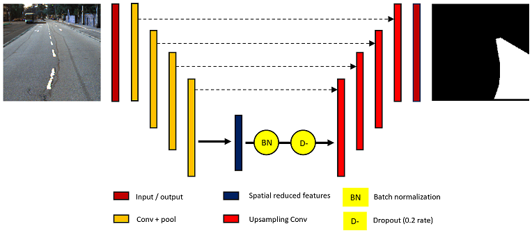

By introducing Batch Normalization and Dropout on the latent features, the performance of the original U-Net can be improved on detecting road lanes on KITTI dataset. In addition to that, the encoder layer is replaced with a pre-trained VGG16 model for accurately representing latent features. The Lane U-Net is a extended version of U-Net that can identify lanes and segment them.
Contributors: Akash Mahajan

Software Releases: GitHub repository or Zip (instructions inside)
Want to contribute? Jump to the GitHub repository and send me a request to become a open-source contributor to this project.